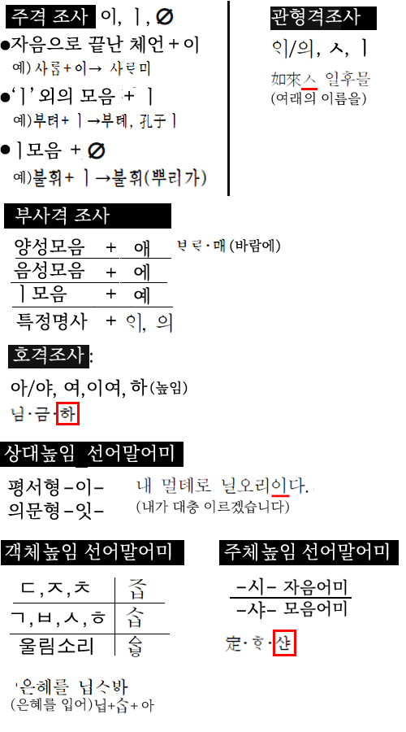

[공지.오류.정오]
중세국어해설에 참고그림이 표시되지 않는 버그가 있어요.

[ios_korean_ver:2.82]
문제 중 {몰라그림}이 나오는 버그가 있어 수정함
[기본 암기장]에서 선택안되는 버그가 있어 수정함(아이폰12 등)
: (터치에서 길게누르는(longPress)방식으로 변경)
----
[ios_korean_ver:2.81]
:UI에 버그가 있어 일부 수정했어요
-----
[ios_korean_ver:2.80]
이미지로 된 일부 문제가 잘리는 버그 수정(불편드려 죄송)
(예) 지9.21년10번 봉황수 등
[객관식 문제]
: 소방.2021년 추가(중세국어, 시조 포함)